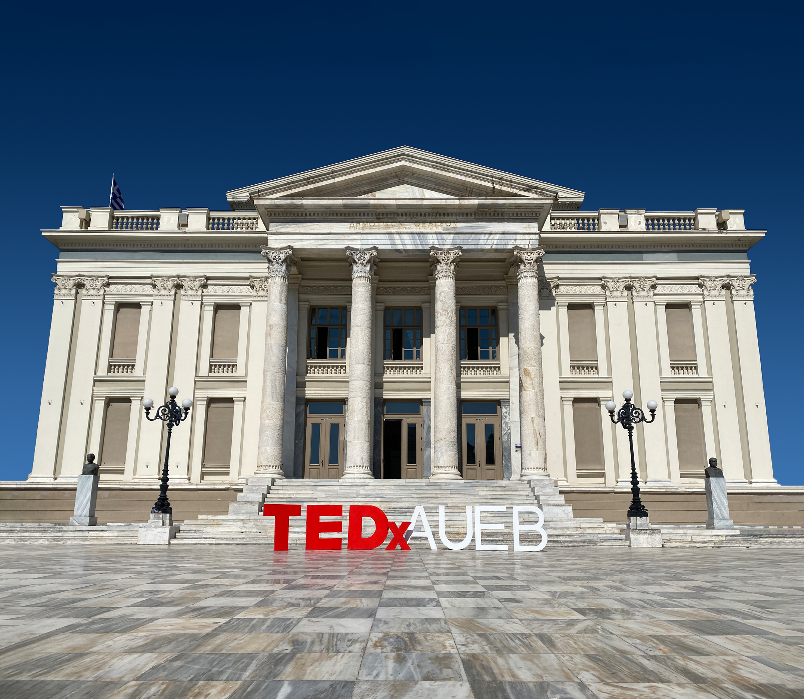
Το TEDxAUEB ήταν μια πρωτοβουλία των φοιτητών του Οικονομικού Πανεπιστημίου Αθηνών για τη δημιουργία του πρώτου TEDxUniversity στην Ελλάδα το 2013. Μετά από δώδεκα επιτυχημένες εκδηλώσεις, το Οικονομικό Πανεπιστήμιο Αθηνών είναι το κορυφαίο Πανεπιστήμιο στην Ελλάδα στη διοργάνωση και την πραγματοποίηση εκδηλώσεων TEDx University. Στόχος μας είναι να δημιουργήσουμε μια ιδέα χρησιμοποιώντας διεπιστημονικά παραδείγματα από την τέχνη,την εκπαίδευση, την τεχνολογία, το σχέδιο, τον πολιτισμό, την επιστήμη, τον αθλητισμό και τις επιχειρήσεις.
Learn More About UsTο TEDxAueb επιστρέφει για 13η συνεχόμενη χρονιά με σκοπό να συνεχίσει να μοιράζεται με το κοινό του
“Ιδέες που Αλλάζουν τα Πάντα”!
Αυτό που κάνει, όμως, το event μας κάθε χρόνο τόσο ξεχωριστό είναι η ομάδα πίσω από αυτό. Κάθε χρόνο, η
οργανωτική ομάδα του TEDxAueb με στόχο να εμπνεύσει, να ευαισθητοποιήσει και να κινητοποιήσει, προσφέρει
στα μέλη της κοινότητάς του, και όχι μόνο, μία μοναδική εμπειρία.
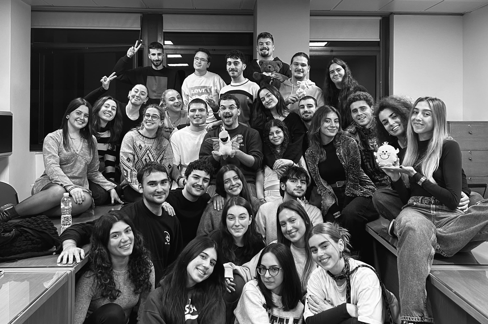
Meet Our TeamΕνώ προετοιμαζόμαστε για το 13ο TEDxAUEB, μπορούμε ταυτόχρονα να θυμηθούμε τα παλαιότερα μας events.
Μπορείς να περιπλανηθείς στην ιστορία του TEDxAueb, να ανακαλύψεις προηγούμενες ομιλίες, εισηγητές και
θέματα που μας έκαναν να σκεφτόμαστε. H ιστορία του TEDxAUEB σου δίνει τη δυνατότητα να ξαναζείς τις
στιγμές αυτές, με τις ομιλίες που σε συγκινούν και σε κάνουν να σκεφτείς. Όλα αυτά τα υπέροχα
περιεχόμενα και το όμορφο σχεδιασμός της σελίδας δημιουργούν μια εμπειρία πλοήγησης που μένει στην
καρδιά και στο μυαλό σου.
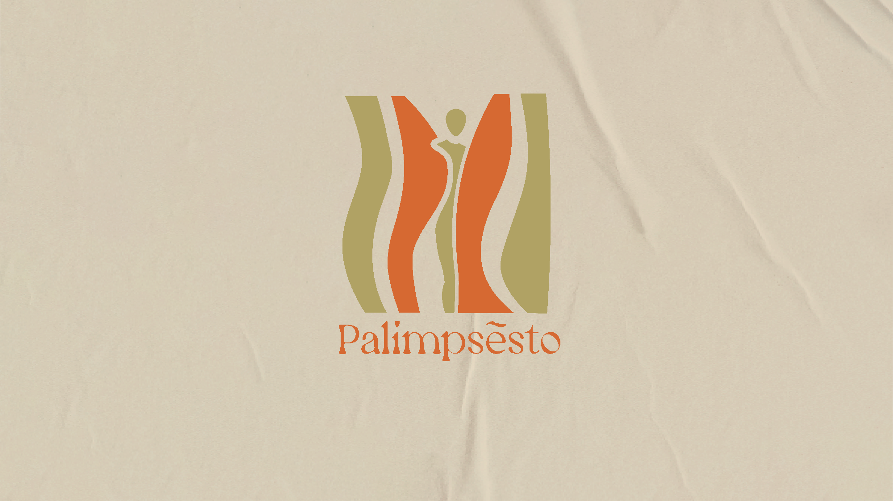
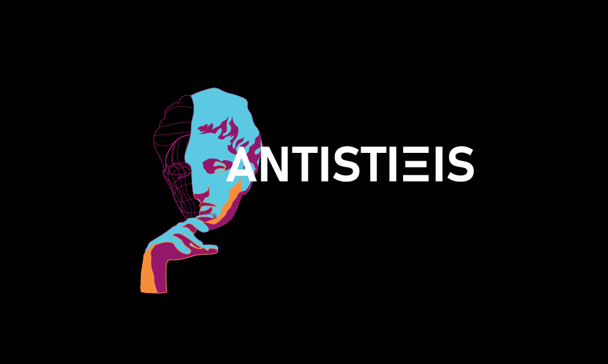
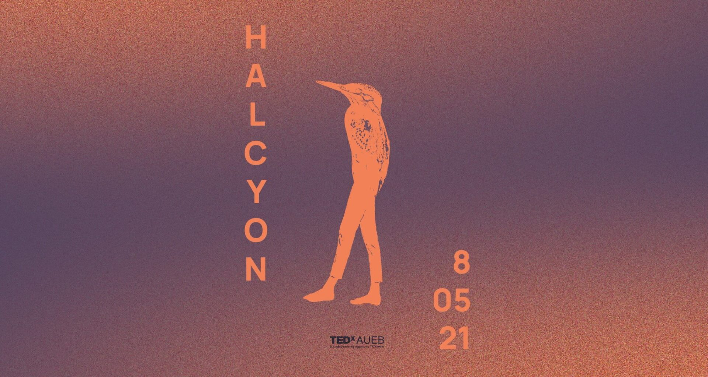
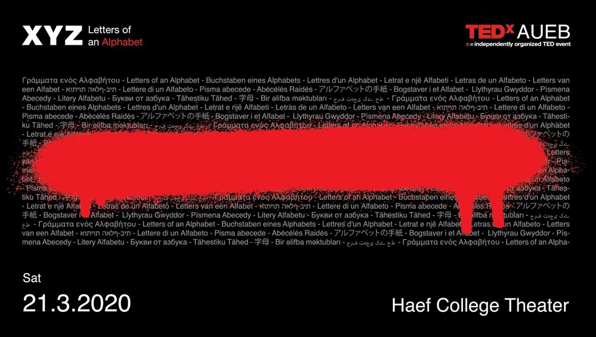
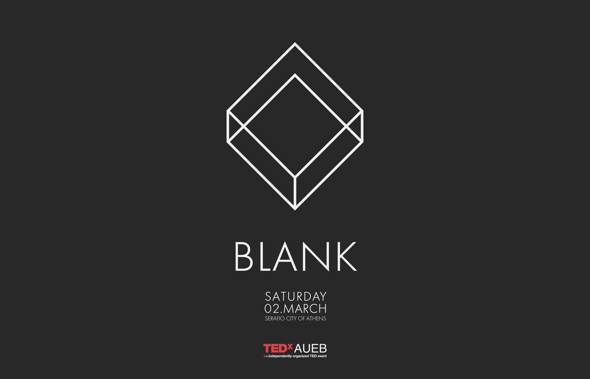
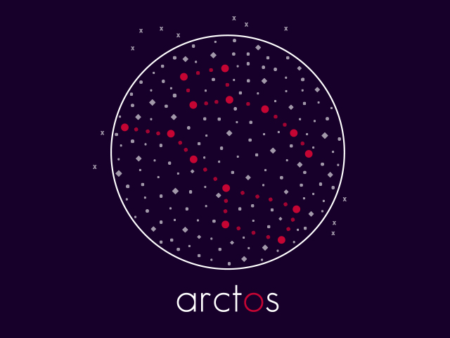
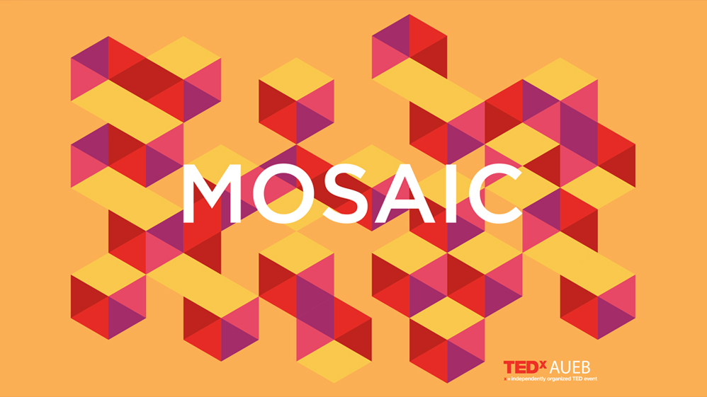
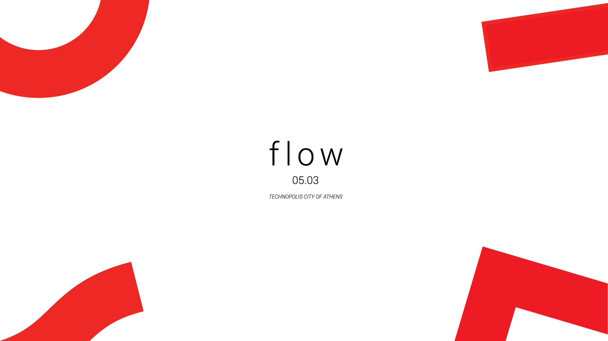
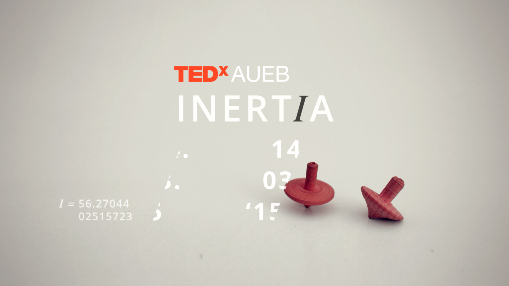
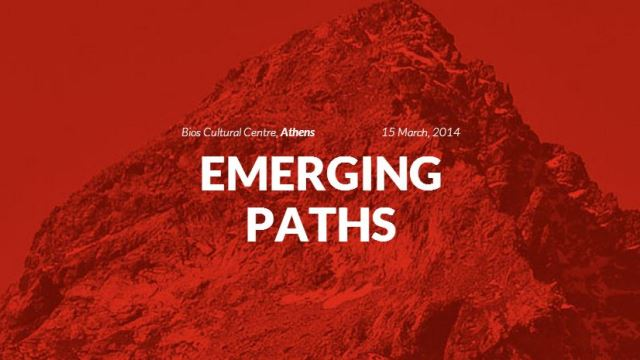
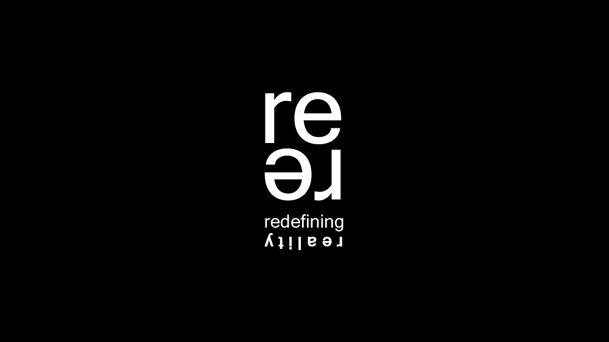
@tedxaueb Let’s [TED]talk About: ADULTHOOD & THE 20s ✨ PART 2 ✨ Don’t forget to watch part 1 first! 🙌 ♬ original sound - TEDXAUEB
@tedxaueb “Let’s [ TED ] talk about:” ADULTHOOD & 20s ✨ Η δεκαετία των 20 είναι γεμάτη αλλαγές, προκλήσεις και νέες ευκαιρίες. Βγαίνουμε στους δρόμους της Αθήνας, ψάχνοντας ανθρώπους που θέλουν να μοιραστούν τις εμπειρίες και τις σκέψεις τους για την ενηλικίωση. Πώς φανταζόσουν την ενηλικίωση και πώς είναι στην πραγματικότητα; Αν μπορούσες να δώσεις μια συμβουλή στον νεότερο εαυτό σου, ποια θα ήταν; Μείνε συντονισμένος για το part 2! 😉 ♬ original sound - TEDXAUEB
@tedxaueb Let’s [TED]talk About : HOPE AND DREAMS ✨PART 2✨ Don’t forget to watch part 1 first !🫣 ♬ original sound - TEDXAUEB
@tedxaueb “Let’s [ TED ] talk about:” HOPE & DREAMS ✨ Βρισκόμαστε ξανά στους δρόμους της Αθήνας, αναζητώντας ανθρώπους έτοιμους να μοιραστούν τις ελπίδες και τα όνειρά τους. Τι σημαίνει ελπίδα για εσένα; Ποιο είναι το όνειρό σου για το μέλλον; Μείνε συντονισμένος για το part 2! 😉 ♬ original sound - TEDXAUEB
@tedxaueb Let’s [ TED ]talk About: LOVE ✨PART 2✨ Μην ξεχάσεις να δεις πρώτα το part 1 ! ♬ original sound - TEDXAUEB
@tedxaueb “Let’s [ TED ] talk about:” Για δεύτερη συνεχόμενη χρονιά, η αγαπημένη μας μίνι σειρά επιστρέφει, ταξιδεύοντάς μας στους δρόμους της Αθήνας. Μέσα από αυθεντικές συναντήσεις με αγνώστους, μας θυμίζει τη μαγεία του να μοιραζόμαστε σκέψεις, συναισθήματα και στιγμές που τόσο πολύ μας είχαν λείψει! LOVE Αυτή την εβδομάδα αποφασίσαμε να μιλήσουμε για την ✨Αγάπη✨, για το τι σημαίνει για τον κάθε έναν αλλά και πως αυτή μπορεί να μας επηρεάσει. Τα παιδιά μας έδωσαν καταπληκτικές απαντήσεις και δεν μπορέσαμε να τις χωρέσουμε σε ένα βίντεο🥹 Απολαύστε το part 1 και stay tuned για το part 2 😉 ♬ original sound - TEDXAUEB